P'tit apéro chez M.Coutens
En fin d'année, M.Coutens a eu l'extrême gentillesse d'inviter toute la classe et tous nos profs chez lui pour prendre l'apéro. Mais il faut qu'on vous explique quelque chose quand même. Un jour, M.Coutens nous a promis qu'il nous donnerait les pôlynomes de Legendre en DS avant la fin de l'année. Si il ne le faisait pas, il s'était engagé à nous payer le champagne. C'était pas tomber dans l'oreille de sourds. Les Sup3 retiennent très bien ces choses là. Le temps passe. On arrive au dernier DS... Tous les Sup3 y pensent et s'attendent à avoir ces fameux pôlynomes dans leur DS. Mais à la surprise générale, il n'en est rien. Et lors du cours qui a suivi, on a tous levé la main en même temps pendant qu'il écrivait au tableau. Quand il a fini d'écrire et qu'il s'est retourné, il était étonné qu'une classe entière lève la main ! Krophète, en bon porte-parole, lui a alors rappelé sa promesse. Il a rigolé et a dit qu'il allait alors acheter le champagne. Et c'est comme ça que quelques jours plus tard, toute la Sup3 était réunie avec leurs professeurs chez le roi des maths à boire du champagne. Souvenirs...
| 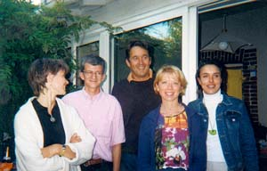 |
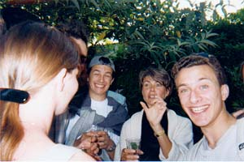 |
| Bon ben on va commencer avec nos chers profs. De gauche à droite : Mme Gouchet (Anglais), M.Coutens (Maths), Monsieur Traquelet (S.I.), Mme Smolevsky (Physique-Chimie) et la femme de M.Coutens. Il faut avouer qu'on voit mieux Mme Gouchet à droite... Les présentations sont faites. | |
| Je sais pas ce que vous en pensez, mais moi je trouve qu'ils forment une belle famille ! Manue ressemble pas mal à Smole (blonde, yeux clairs) et PBO ressemble à John (même coiffure et même forme de visage), non ? Mon père, ma mère, mes frères et mes soeurs ! Oh oh ! Ca serait le bonheur ! |
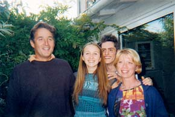 |
| 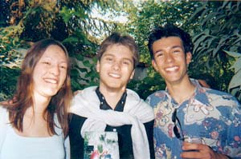 | Elsa, Pascal et Ludovic ! Elsa a été en Sup3 pendant une semaine ou deux, avant d'arrêter math sup pour médecine. Les deux autres sont encore parmi nous bien sûr. |
| Anthony, Elise, Simon et Dublack. On remarque au premier coup d'oeil la force de Simon et sa dominance au sein de ce groupe. | 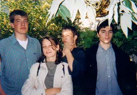 |
| 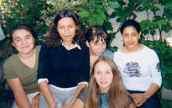 | Elise, Anissa, Elodie, Jihane et Manue en bas (vous savez la blonde...). Apparemment tout ce petit monde va bien. |
| Malawi (Emilien), Dublack (Arnaud) et Pierre-Yves (Pedro). On ne sait pas ce que vous en pensez mais on a un peu l'impression qu'Emilien fait la gueule, qu'Arnaud est bourré et que Pedro est tout à fait naturel sur cette photo. |
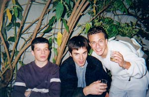 |
| 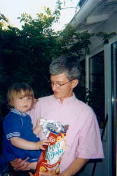 |
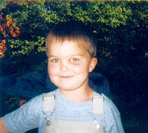 |
| La petite Juliette dans les bras de son papa. Elle n'a pas l'air très motivée par les chips, je suis sûr qu'elle surveille déjà sa ligne ! Quant à Louis, son père nous a dit qu'il pensait déjà aux filles (il préfère les filles rectangles...). Je pense que c'est en en défendant une qu'il s'est blessé à l'oeil. Bravo mon p'tit gars !! Pschhhhit ! | |
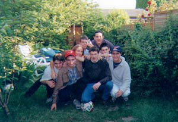 | Une petite photo dans le fond du jardin, en souvenir de ce jour. Ah oui cette photo est la 51è du site. Voilà il fallait que ça soit dit ! |
| Alors là on voit mal mais c'est Manue qui est monté sur la moto de M.Traquelet (John pour les intimes). Faut toujours qu'elle se fasse remarquer celle là ! | 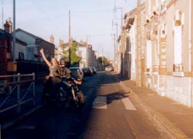 |
| 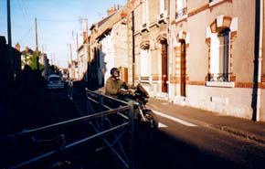 | John de plus près, en train de partir. Si si c'est bien lui. Je sens certains d'entre vous sceptiques... |
| Superbe photo pour finir ! C'était au moment où Manue est montée sur la moto de John. Personnellement j'aime bien cette photo car tout le monde rigole beaucoup. Juste après notre départ de chez M.Coutens, on partait faire notre dernier repas de classe de notre année de Sup. Ah là là ! Quels souvenirs ! | 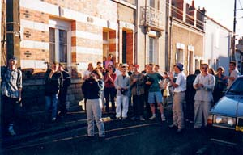 |